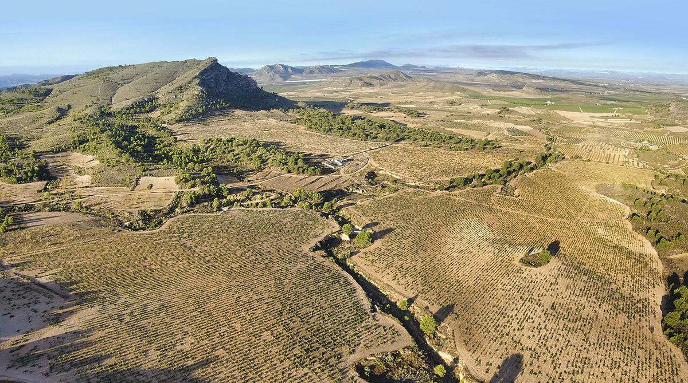
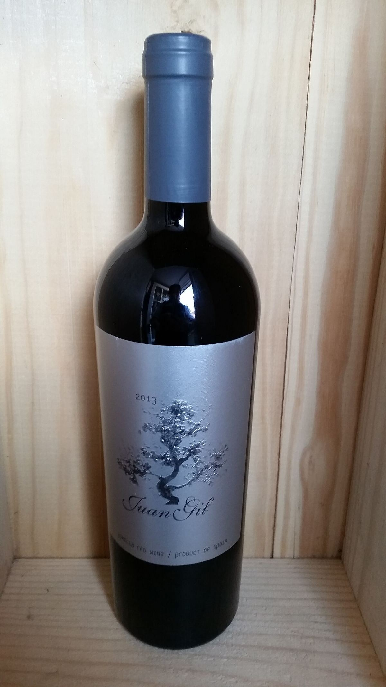

RED
Jumilla is a designation of origin in south-eastern Spain, between the north of the Region of Murcia and the south-east of Albacete. Its emblematic variety is Monastrell, grown in a dry continental climate and partly on its own roots.

Viticulture around Jumilla has very ancient roots and has remained one of the area's main agricultural activities over the centuries. At the end of the nineteenth century, when phylloxera was devastating other European vineyards, Jumilla remained unaffected for a long time and enjoyed strong demand for its wines. The pest did not reach the area until the late 1980s, making it necessary to replant much of the vineyard on rootstocks, although old ungrafted vines survive in sandy soils. The designation of origin was created in 1966. For decades much of the production went into bulk wine; since the 1990s the modernisation of wineries has driven bottled wines.
The designation covers the municipality of Jumilla, in the Region of Murcia, and several municipalities in the south-east of the province of Albacete, such as Fuente-Álamo, Hellín, Montealegre del Castillo, Ontur, Tobarra and Albatana. The vineyards lie in valleys and high plains surrounded by mountains, at altitudes ranging from roughly 400 to 800 metres. The climate is continental and semi-arid, with little rainfall, very hot dry summers, cold winters and abundant sunshine. The difference between day and night temperatures helps moderate the effects of the heat.
Calcareous soils predominate, brown or brown-calcareous, poor in organic matter and with good water retention at depth, together with sandier areas. Many vines are bush-trained and dry-farmed.
Monastrell is the dominant variety. Well adapted to drought and heat, it gives reds with deep colour, ripe black fruit, spicy and Mediterranean herb notes, firm tannins and good body. Tempranillo (Cencibel), Garnacha Tintorera, Cabernet Sauvignon, Merlot, Syrah and Petit Verdot are also grown, and among the whites Airén, Macabeo, Malvasía, Chardonnay and Sauvignon Blanc. Producers make young, oaked and aged reds, rosés, whites and sweet Monastrell wines from very ripe grapes.
Scarce water and poor soils limit yields, and the low humidity reduces disease pressure, which makes organic viticulture easier; it is increasingly widespread in the area. Old Monastrell vines, some of them ungrafted, are one of the designation's main resources for making more concentrated wines. The landscape of the designation, with extensive vineyards on plains surrounded by arid mountain ranges, reflects this adaptation of the vine to a very dry environment.


